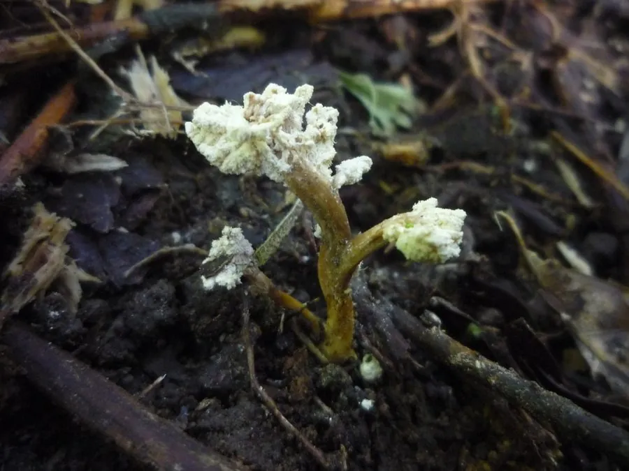

真菌 · 真菌界
蝉花 Cordyceps cicadae

寄生在蝉的若虫体内、从虫体头部长出棒状子座的虫生真菌，是传统中药材，与冬虫夏草并称“虫草双珍”。
- 分类
- 门子囊菌门纲粪壳菌纲目肉座菌目科虫草科属虫草属
- 栖息环境
- 竹林、阔叶林和针阔混交林的林下土壤，寄生于蝉的若虫
- 地理分布
- 中国浙江、江苏、四川、云南、福建等地，东亚其他地区也有分布
- 保护级别
- 暂无评估（IUCN 未评估，野生资源因采挖减少）
物种志
蝉花是子囊菌门肉座菌目的虫生真菌，由被寄生的蝉若虫和子座组成。子座从虫体头部长出，呈棒状或分枝状，长 3–8 cm，淡黄色至橙黄色，顶端膨大并密生子囊壳；蝉若虫尸体呈黄褐色，仍保持完整的形态，埋在土壤中。孢子成熟后散出，感染新的蝉若虫。
蝉花多生于竹林、阔叶林和针阔混交林的林下土壤中，寄生于蝉的若虫，在中国浙江、江苏、四川、云南、福建等地有分布。它是传统中药材，在民间被认为具有滋补作用，常与冬虫夏草并称“虫草双珍”。蝉花多在初夏采集，采挖时要辨别真伪，避免误食有毒的类似菌类；野生资源因过度采挖而减少，现已有部分人工培育。
形态与习性
- 子座从蝉若虫头部长出，棒状或分枝状，长 3–8 cm
- 虫体蝉若虫尸体黄褐色，形态完整
- 寄生寄生于蝉的若虫
- 采收期初夏，子座长出后采集
- 药用传统中药材，民间视为滋补品
- 生境竹林和阔叶林的林下土壤
- 注意事项采挖时需辨别真伪，避免误食类似毒菌
趣味知识
- 蝉花从被寄生的蝉若虫头部长出棒状子座。
- 它是传统中药材，民间常与冬虫夏草并称“虫草双珍”。
- 蝉花多在初夏采集，采挖时要辨别真伪。
- 野生蝉花因过度采挖而减少，现已有部分人工培育。